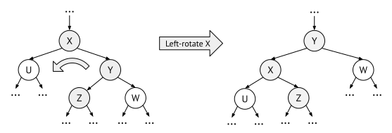
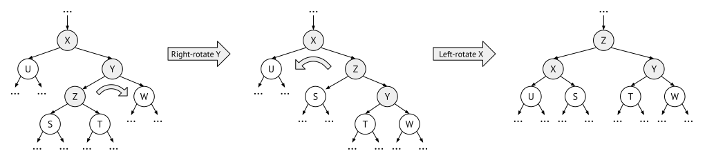

10.2 Self-balancing trees
As we saw in the last section, binary search trees (BST) work fine when we insert elements in a somewhat random order. Then the height of the final tree will grow logarithmically in the number of nodes, which is another way of saying that the tree is quite balanced. The problem with BSTs is that we cannot guarantee that the tree will be balanced, and if we insert elements in an unfortunate order (for example in sorted order), then it will become very unbalanced. That is where self-balancing trees come in.
A self-balancing tree ensures that it will always be balanced, regardless in what order elements are added or removed from the tree. There are many many different kinds of self-balancing trees, and in this book we will only discuss a handful.
The most straightforward is to start from a normal BST and modify its structure whenever we add or remove nodes. We do this by stating additional balance invariants, and whenever an invariant is broken we make sure to rebalance the tree to satisfy the invariant again.
Therefore we need to come up with a good balancing invariant, and some method for rebalancing. Unfortunately, we cannot use the most obvious invariant – that the tree must be completely balanced (or in other words, that the tree must be complete). The reason for this is that it costs too much to maintain this invariant, for example, Figure 10.3 shows that we might need to reorganise the tree completely after each insertion.
Instead we need to a find weaker balance invariant, and there are lots of different possibilities. For example, in Section 10.3 we introduce the perhaps most famous of all self-balancing trees, the AVL tree, and in Section 10.4 we discuss 2/3 trees and B-trees which use a different invariants.
Example: Scapegoat trees
One very simple solution is not require that the tree must be completely balanced, but instead to state that it must be balanced to a certain degree. This invariant can be formulated like follows:
- Every tree node t must be \alpha-balanced, meaning that
- \text{size}(t.\text{left})\leq\alpha\cdot\text{size}(t), and
- \text{size}(t.\text{right})\leq\alpha\cdot\text{size}(t).
After inserting or deleting into the tree, a node might get \alpha-unbalanced. If this happens we rebuild the whole subtree at that node, making it completely balanced. This restructuring process takes quite long time because it is linear in the size of the subtree, but it can be shown that it will not happen too often. Using the techniques from Section 7.1, it can be shown that the amortised complexity of insertion and deletion is logarithmic in the size of the tree, O(\log(n)).
We will not discuss Scapegoat trees further in this book, and the implementation details are left as an exercise to the reader.
Another possibility is to use non-binary trees – for example, in Section 10.4 we introduce the 2-3 trees and the B-trees. Allowing the tree nodes to have more than two children makes it possible to keep the tree completely balanced at all times, and therefore 2-3 trees and B-trees have logarithmic complexity.
10.2.1 Tree rotations
Most self-balancing trees use rotations to restore their balance invariant, and there are two main forms – the single and the double rotation. These rotations are used both by AVL trees, Red-black trees, Splay trees, and numerous other self-balancing BSTs. However, not all use rotations – for example the Scapegoat tree above instead builds a completely new subtree.
In the following we only explain left rotations, but right rotations are of course analoguous.
Single rotation
Assume that a subtree is right-unbalanced – meaning that the right child has a larger size, or a larger height, or in some other way is “heavier” than the left child. Let us call the left child u, and the right child consists of the two subtrees z and w. To left-rotate this subtree, we make the right child y the parent, and move the previous parent x to the left so that it becomes a left child. When doing this, z – the previous left child of y – has to reattach itself as a right child of x instead.

If the right-right child w was the “heaviest” of the subtrees, then this left-rotation should have made the subtree a little more balanced than before. The rotation is shown in Figure 10.4.
Note: When you want to implement rotation, you have to remember to update the parent node too. Before the rotation its child was the x node, but afterwards this should be y instead.
Double rotation
However, if the right-left child z was “heavier”, then a left-rotation might not solve our problems. In that case, the only thing that happens is that the tree becomes left-heavy instead of right-heavy.
To solve right-left cases, we have to do a double rotation. This means that we first make a single right rotation of the right child y, followed by a left rotation of the parent x. The first right rotation over the y child transforms it into a right-right case, and then we can continue with a normal left rotation like above. As you can see in Figure 10.5, the effect of a double rotation is that the right-left grandchild z moves two levels up to become the new parent.

Implementing rotations
We implement a rotation by reassigning the child pointers of the involved nodes. The only complication is to make sure to do this in the right order, because when we reassign a child the old child is forgotten if we have not stored it somewhere else.
In a single left rotation, the parent x should become the new left child of y, so we can assign y.left = x.
But before we do that we have to do something with y’s left child z. This should be the new right child of
x, and since we already know x’s current right child, y, it is fine to start with this assignment,
x.right = y.left. So, a single right rotation can be
summarised in two simple pointer assignments:
x.right = y.left
y.left = xBut note that the parent should get a new child too – before it was x and now it is y. The cleanest solution is if we implement a recursive function that calls itself for a child. Then the function can simply return y instead of x and trust that it will be resolved by the caller.
If we do not want a recursive implementation we need to keep track of the parent too, including if it is a left or right child of the parent – this is not difficult, but involves some more variables and if-clauses.
To implement a double right-left rotation, we can do a right rotation on the right child, followed by a left rotation on the current, like this:
x.right = rotate_right(x.right)
rotate_left(x)But we can also compress the two rotations into the following four pointer assignments:
x.right = z.left ; z.left = x
y.left = z.right ; z.right = y